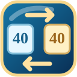

← Kniffel-Lobby
✕ Spiel abbrechen
↶ Rückgängig
Raum –
↻
Verbinde …
🔒 Weihnachtswürfel prüfen
⏳ Weihnachtswürfel-Freischaltung wird geprüft …
⛶ Vollbild
📋 Punkteblock
Würfel antippen, um sie festzuhalten.
🎲 Würfeln
Spielinformationen
Warte auf Partie
☘
Joker
🎲 Würfel & Würfe
+1 Wurf
+1 Würfel
Neuwurf
Komplett neu
✨ Punkte & Taktik
Freie Eintragung

Verschieben
Wurf kopieren